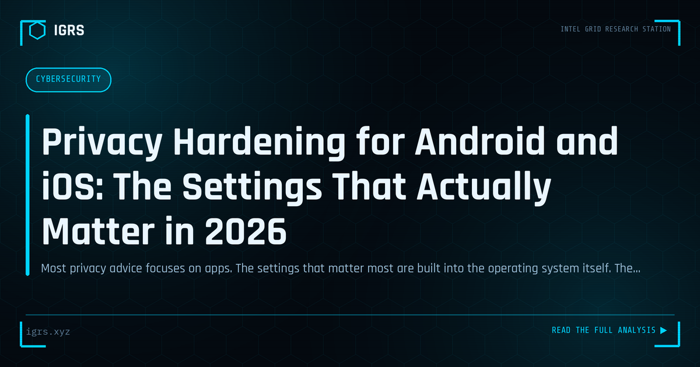

Privacy Hardening for Android and iOS: The Settings That Actually Matter in 2026
| File No. | IGRS-056/2026 |
| Subject | Practical privacy configuration guide for Android and iOS smartphones in 2026 |
| Category | Privacy & Safety |
| Author | Manuj Kumar Pandey |
| Published | 2026-05-24 |
| Reading time | 12 minutes |
Most privacy advice focuses on apps. The settings that matter most are built into the operating system itself. The complete list, explained.
Hardening Privacy on iOS and Android
Smartphones hold our most sensitive data — location, messages, photos, contacts, and accounts — and their default settings often favour convenience over privacy. Hardening the privacy settings on iOS and Android meaningfully reduces data exposure and tracking. For Indian users, and especially those in sensitive roles, configuring these settings is a practical, high-impact privacy measure. This guide walks through the essential settings.
Why Default Settings Fall Short
Out of the box, smartphones share considerable data — with apps, advertisers, and platform vendors. Location is tracked, app permissions are broad, advertising identifiers enable cross-app tracking, and various features transmit data by default. While much of this is benign, it creates a substantial privacy footprint. Reviewing and tightening these settings gives users control over what their device shares.
Critical Permission Controls
| Permission | Recommendation |
|---|---|
| Location | Grant only while using, deny background |
| Microphone | Allow only for apps that need it |
| Camera | Restrict to necessary apps |
| Contacts | Limit access; many apps don't need it |
| Photos | Grant selected access, not full library |
Managing App Permissions
The single most impactful privacy step is reviewing app permissions. Both iOS and Android let users see which apps have access to location, microphone, camera, contacts, and more, and revoke unnecessary access. Many apps request far more than they need. Granting location only while using an app, restricting photo access to selected items, and denying permissions apps don't require dramatically reduces data exposure with no loss of essential function.
Location Privacy
Location is among the most sensitive data a phone holds. Beyond per-app controls, users should disable background location for apps that don't need it, turn off location history where offered, and review which system services use location. Precise versus approximate location settings, available on modern devices, let users share only general location with apps that don't need exact positioning — a useful privacy compromise.
Limiting Tracking and Advertising
Both platforms enable advertising-based tracking by default. iOS App Tracking Transparency lets users deny apps permission to track across other apps and websites, and resetting or disabling the advertising identifier limits profiling. On Android, opting out of ad personalisation and resetting the advertising ID achieves similar protection. These settings curtail the cross-app tracking that builds detailed advertising profiles.
Securing Accounts and Data
Privacy and security overlap on mobile devices. A strong screen lock, enabled device encryption (default on modern devices), two-factor authentication on the platform account, and careful management of cloud backup settings all protect data. For sensitive users, reviewing what is backed up to the cloud and ensuring backups are encrypted prevents data exposure through the backup channel.
Building Mobile Privacy Habits
For Indian users, hardening mobile privacy combines reviewing and restricting app permissions, controlling location sharing, limiting advertising tracking, and securing accounts and backups. These settings, configured once and reviewed periodically, substantially reduce the data a phone shares without sacrificing usability. For those in sensitive roles, this configuration is an important part of personal operational security. As smartphones become ever more central to daily life and hold ever more sensitive data, taking control of their privacy settings is among the most practical and effective privacy measures available to any user.